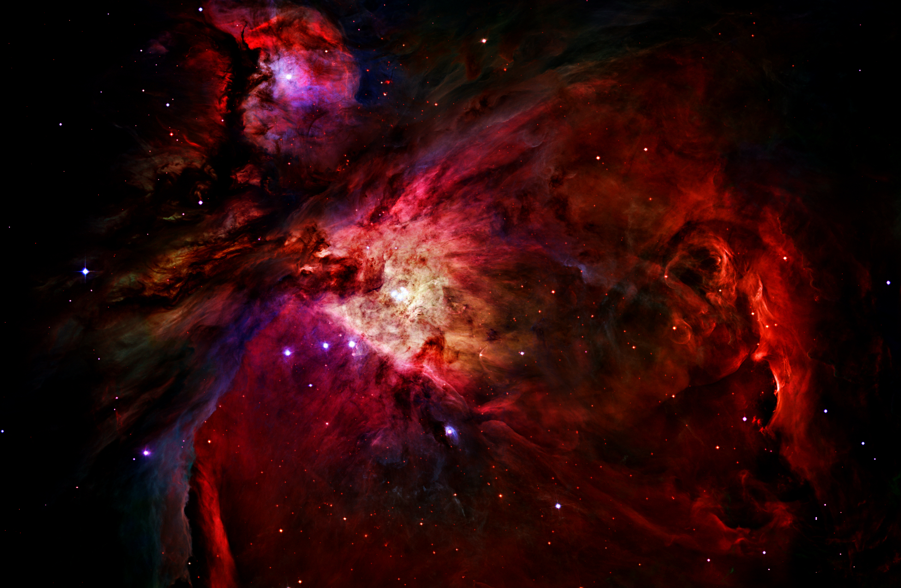

Murl Westheffer - Project Designer
Designed from the Top Down Our process begins with a deep brainstorming session. We meet with each person involved in the process - from your team to ours - to have thier individual input included. This master list is then pared down, separating the chaff from the wheat, then expanded upon to create the abstract overview of tasks to complete the project 
© Team 4th Dimension 2014
This website is under construction
Web design by Team 4th Dimension